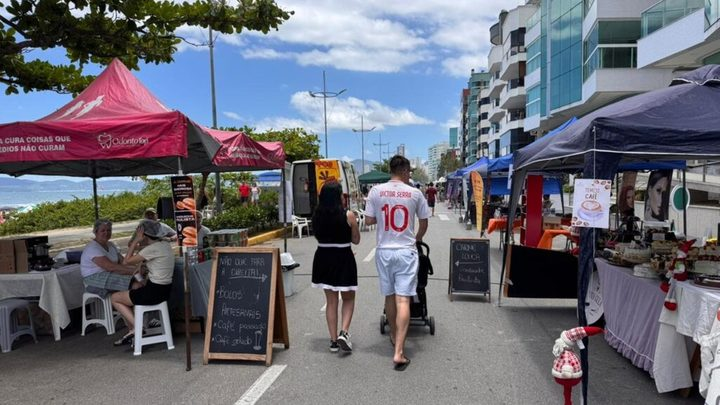

Itapema · Serviço
Itapema · ServiçoA Sala do Empreendedor de Itapema passa a ter consultoria do Sebrae
A outra frente da mesma secretaria, voltada para quem tem CNPJ na cidade.
Em 8 de outubro saiu o chamamento do Itapema Inova Mais e em 12 de outubro o do Empreend’Elas, os dois da Secretaria de Desenvolvimento Econômico e Habitação. Baixamos os dois PDF e comparamos linha a linha: o Anexo III é a mesma planilha, dos R$ 3.000 de coffee break aos 130 crachás de R$ 1.200, com o mesmo público de 140 pessoas e o mesmo total de referência. Quem quiser patrocinar tem até 26 de outubro num caso e até 3 de novembro no outro, a partir de R$ 100, e o critério de seleção dá prioridade a empresa sediada em Itapema.
Em 30 segundos · Modo de Leitura, formato original Santa Informa
Itapema abriu dois editais de patrocínio.
Eles procuram empresa para bancar evento da Prefeitura.
O primeiro saiu em 8 de outubro.
É o do Itapema Inova Mais.
Esse evento acontece em 12 de novembro.
O segundo saiu em 12 de outubro.
É o do Empreend’Elas.
Encontro de empreendedorismo feminino.
Acontece em 25 de novembro.
Os dois são da mesma secretaria.
Desenvolvimento Econômico e Habitação.
O patrocínio mínimo é de R$ 100.
Não existe valor máximo.
São quatro cotas de divulgação.
Diamante, acima de R$ 3.000.
Ouro, de R$ 1.500 a R$ 2.999.
Prata, de R$ 500 a R$ 1.499.
Bronze, até R$ 499.
Dá para patrocinar sem ser em dinheiro.
Vale ceder espaço, serviço ou material.
Agora o que achamos abrindo os dois PDF.
A planilha de custo é a mesma nos dois.
Item por item, valor por valor.
R$ 3.000 de coffee break nos dois.
R$ 2.500 de camiseta nos dois.
130 crachás por R$ 1.200 nos dois.
Os dois falam em 140 participantes.
Os dois marcam o local como Cedido.
Somamos os itens com valor: R$ 20.200.
O total impresso é de cerca de R$ 20.700.
A diferença de R$ 500 não é explicada.
Agora o que interessa para quem tem empresa.
O prazo do Inova Mais é 26 de outubro.
O do Empreend’Elas é 3 de novembro.
A entrega é na Rua 902, nº 155.
No Alto São Bento, das 12h às 18h.
Também vale o canal eletrônico da secretaria.
Empresa de Itapema tem prioridade.
Está escrito no critério de seleção.
Os editais estão só no site da Prefeitura.
No Diário Oficial não achamos nenhum dos dois.
EconomiaPublicada em Redação Santa Informa
A Prefeitura de Itapema publicou em 12 de outubro o Edital de Chamamento Público nº 03/2026, que procura empresa disposta a patrocinar o Empreend’Elas, encontro de empreendedorismo feminino marcado para 25 de novembro. Seis dias antes, em 8 de outubro, a mesma secretaria tinha publicado o nº 02/2026, do Itapema Inova Mais, que acontece em 12 de novembro. Os dois aceitam patrocínio a partir de R$ 100. E os dois trazem no Anexo III a mesma planilha de custo, linha por linha, do coffee break de R$ 3.000 aos 130 crachás de R$ 1.200.
Quem quiser entrar tem prazo curto. As propostas do Itapema Inova Mais vão até 26 de outubro. As do Empreend’Elas, até 3 de novembro. Nos dois casos o envelope é protocolado na Secretaria de Desenvolvimento Econômico e Habitação, na Rua 902, nº 155, no Alto São Bento, das 12h às 18h. Os editais também admitem envio pelo canal eletrônico oficial da secretaria. Pode concorrer pessoa jurídica com ou sem fins lucrativos, e um dos critérios de seleção dá prioridade a quem é sediado em Itapema ou tem atuação comprovada na cidade.
Valor máximo não existe. A gradação de divulgação tem quatro faixas. Diamante, acima de R$ 3.000, leva logomarca em destaque em todos os materiais, marca no palco principal e publicação dedicada nas redes sociais. Ouro, de R$ 1.500 a R$ 2.999, entra nos materiais de divulgação, nos banners e nas redes. Prata, de R$ 500 a R$ 1.499, fica na sinalização do evento e numa menção nas redes. Bronze, até R$ 499, recebe o selo de Apoiador Oficial e menção coletiva. O patrocínio pode ser em dinheiro, em cessão de espaço, em serviço contratado ou em material entregue.
O Anexo III dos dois editais é a mesma tabela com o nome do evento trocado. Os dois falam em 140 participantes, os dois marcam o auditório como Cedido e os dois listam os mesmos itens pelos mesmos valores: R$ 3.000 de coffee break, R$ 2.500 de camisetas para 30 pessoas, R$ 2.500 de som e projeção, R$ 2.000 de identidade visual, R$ 1.500 de banners, R$ 1.500 de fotografia e vídeo, R$ 1.200 de crachás, R$ 1.000 de segurança e seguro, R$ 800 de sinalização, R$ 600 de kit palestrante, R$ 600 de limpeza, R$ 500 de internet, R$ 500 de certificados digitais e R$ 2.000 de reserva. Somamos os 14 itens que trazem número e deu R$ 20.200. O total impresso nos dois é de aproximadamente R$ 20.700. Os dois estimam que o desembolso direto do município fique entre R$ 5.000 e R$ 13.000.
O resumo de 30 segundos está no topo e a versão completa é o texto acima. Aqui ficam as três leituras da casa sobre o mesmo assunto.
Clara, a otimista
Cem reais. É esse o piso para uma empresa daqui colocar o nome num evento da cidade, e isso muda quem pode participar. Não é só a construtora grande ou a rede de farmácia: a papelaria da Rua 902, o café que abriu ano passado, a contadora que atende dez MEI, qualquer uma dessas cabe na cota Bronze e sai com selo de Apoiador Oficial.
E tem a parte que eu gosto mais: dá para patrocinar sem tirar dinheiro do caixa. Os editais aceitam cessão de espaço, serviço e material. Quem imprime pode entregar os banners. Quem tem som pode emprestar o som. Quem tem sala grande pode ceder a sala, que é justamente o item que aparece como Cedido na planilha. Dois eventos em novembro, os dois voltados para quem empreende em Itapema, com a regra escrita e o prazo publicado. Quem quiser aparecer tem até o fim do mês num caso e até o dia 3 no outro.
Seu Prudêncio, o criterioso
Vale acompanhar o calendário. O Inova Mais acontece em 12 de novembro e a proposta de patrocínio entra até 26 de outubro. São dezessete dias entre o fim das inscrições e o evento, para selecionar, assinar contrato, receber o material e imprimir logomarca de patrocinador em banner, crachá e camiseta. Dá, mas não sobra. Quem for entrar não deve deixar para a última semana.
Merece atenção a planilha repetida. Os dois Anexos III são a mesma tabela, com o mesmo público de 140 pessoas, os mesmos 130 crachás e o mesmo total. Pode ser economia de trabalho da secretaria, que aproveitou o modelo, e nesse caso não há nada de errado. Mas estimativa que não muda de um evento para outro perde a função de estimativa, e some a informação de quanto cada evento custa de verdade. Tem também a conta: os itens com valor somam R$ 20.200 e o papel diz aproximadamente R$ 20.700. Meia dúzia de linhas resolveria.
Dito isso, o que foi feito aqui é melhor do que o costume. Patrocínio de evento público é terreno onde é fácil combinar por telefone e ninguém fica sabendo. Esses dois editais fazem o contrário: publicam a tabela de custo, publicam a faixa de cada cota, dizem o que o patrocinador recebe em troca, fixam piso de R$ 100 para não fechar a porta ao pequeno e ainda escrevem que empresa da cidade tem prioridade. Uma sugestão útil seria publicar, depois dos eventos, a lista de quem patrocinou e com quanto. O edital já criou a regra. Falta fechar o ciclo mostrando o resultado, e aí o modelo fica completo.
Caco, o sarcástico
Baixei os dois PDF esperando dois eventos diferentes e encontrei a mesma festa duas vezes. Mesmo coffee break de três mil, mesma camiseta de dois e meio, mesmos cento e trinta crachás. Até o número de gente é igual: cento e quarenta de um lado, cento e quarenta do outro. Ou a secretaria conhece o público de Itapema melhor que o IBGE, ou alguém abriu o arquivo de novembro e trocou o nome em cima.
Reclamação registrada: eu somei a coluna. Deu vinte mil e duzentos. O papel diz aproximadamente vinte mil e setecentos. Quinhentos reais sumiram no caminho, o que em festa de empreendedorismo é quase um curso de controle financeiro.
Mas tá bom porque reclamar de planilha repetida é reclamar que existe planilha. Já vi evento público nascer, acontecer e acabar sem ninguém nunca ver quanto custou nem quem pagou. Aqui está tudo escrito, com valor, com prazo e com endereço para protocolar. Por cem reais o dono da lanchonete entra como Apoiador Oficial. Já vi gente gastar mais que isso tentando aparecer em foto de inauguração.
Fontes: O Edital de Chamamento Público nº 03/2026, do Empreend’Elas, com a data de 25 de novembro, o prazo de 3 de novembro, as quatro cotas, o endereço de protocolo e o Anexo III, está no PDF Edital de patrocínio Empreend’Elas 03/2026, publicado pela Prefeitura de Itapema em 12 de outubro de 2026. O Edital nº 02/2026, do Itapema Inova Mais, com a data de 12 de novembro, o prazo de 26 de outubro e o mesmo Anexo III, está no PDF Edital de patrocínio Itapema Inova Mais, de 8 de outubro de 2026. As duas datas de publicação estão na página Editais do site da Prefeitura. Os três documentos foram abertos em 13 de outubro de 2026. A busca que devolveu zero publicação foi feita no Diário Oficial dos Municípios de Santa Catarina, com o filtro de entidade Prefeitura municipal de Itapema, o termo patrocínio e o período de 1º de setembro a 13 de outubro de 2026, também em 13 de outubro. A soma de R$ 20.200 e a diferença de R$ 500 são contas nossas sobre a tabela dos editais. O atendimento ao empreendedor em Itapema está na nossa matéria A Sala do Empreendedor de Itapema passa a ter consultoria do Sebrae.
Itapema · ServiçoA outra frente da mesma secretaria, voltada para quem tem CNPJ na cidade.
 Itapema · Poder Público
Itapema · Poder PúblicoO que a cidade paga direto por evento, do outro lado do patrocínio privado.

Itapema · TurismoA feira que a Secretaria de Turismo toca com parceiro privado, contada edição por edição.